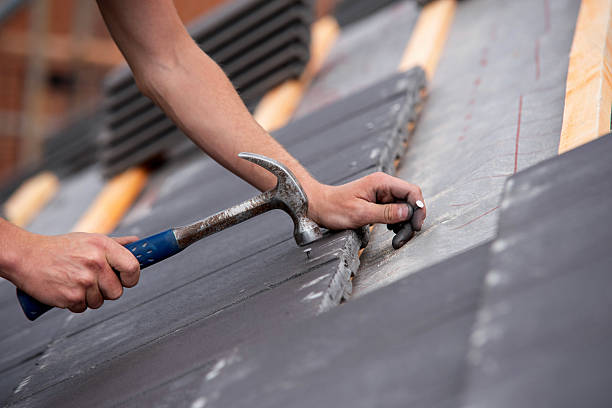

Commercial roofing for buildings that can’t afford vague planning.
Commercial roofing in Newark needs stronger project structure because the roof affects operations, access, tenants, staff, and longer-term building performance all at once.

Offices and retail
Roofing that respects active use and the visible side of the property.
Warehouse and industrial
Bigger footprints and durability concerns call for stronger sequencing and scope control.
Mixed-use buildings
Projects where residential and commercial expectations often overlap in one place.

What owners usually need
A roofing plan that fits the building’s real operating environment.
Commercial roofing conversations often involve timing, business flow, access restrictions, and long-term asset decisions. That makes communication and structure just as important as the roofing work itself.

Planning a commercial roofing project in Newark?
We can help you sort through the roof condition, property demands, and the smartest way to move the work forward.
Request a Commercial Quote